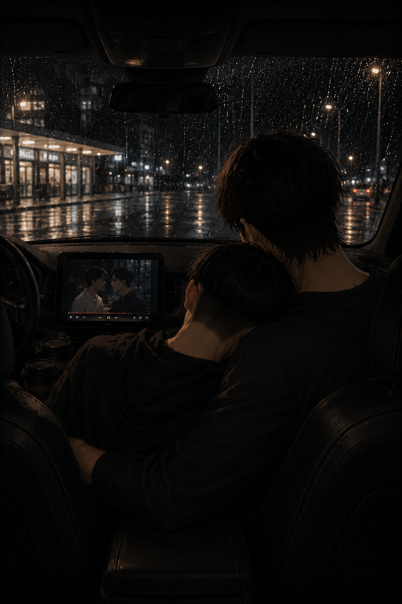

Between the Rain
Levi — POV

They didn’t plan the rain either.
It came down too fast to ignore, sudden and violent against the windshield, turning the road ahead into something blurred and unreliable within seconds.
Eren slowed first.
Levi didn’t argue.
The wipers struggled, useless against the sheer weight of it, and by the time the first crack of thunder rolled somewhere too close to be distant, they had already pulled into the nearest station. Closed. Of course.
Levi watched the empty lights flicker faintly under the downpour, then the vending machines tucked against the wall, humming quietly like they had nothing to do with the storm swallowing everything else.
“…stay here,” he said, already reaching for the door.
Eren didn’t get the chance to complain before Levi was out.
The rain hit hard, colder than expected, soaking through fabric in seconds, loud enough that it swallowed everything else. Levi didn’t linger. In, out, two coffees that smelled vaguely burnt before he even opened them.
He slid back into the passenger’s seat, shutting the door with a dull thud, cutting the storm back down to a muted roar.
For a moment, there was just that—rain against glass, breath fogging faintly in the sudden warmth, the low hum of the engine.
Levi handed one over.
“This better be worth it.”
Eren took it without hesitation, already amused. ““I wouldn’t bet on it. That smells… bleh.”
Levi took a sip.
Paused.
“…that’s disgusting.”
Eren snorted, leaning back into his seat. “You’re drinking hot water with leaves most of the time. Don’t start acting like you have standards.”
Levi gave him a look. “Says the man who would put ketchup on cardboard if given the opportunity.”
“It's completely different. I'm a man of taste.”
“…you’re lucky I love you.”
Eren grinned into his cup.
The rain didn’t ease.
If anything, it got worse, heavy enough now that the world outside the car dissolved completely into streaks and shadows, the station lights smearing into something soft and indistinct through the water and fog.
Eren didn’t say anything at first, just shifted slightly in his seat.
His hand moved almost lazily, slipping his phone out and unlocking it without drawing attention, thumb moving in small, practiced motions.
The screen settled between them like it had always been there, angled just enough to be shared without being offered.
Levi didn’t look immediately. Then he saw it anyway.
The light.
The movement.
The fact that Eren had very clearly decided something for the both of them.
A few seconds passed before Levi’s gaze dropped properly.
Browsed.
Paused.
His eyes narrowed, just slightly.
“…seriously? Boys love?”
Eren didn’t even bother, already settling deeper into his seat as the movie began to play. He turned his head just enough to glance at Levi, then took a slow sip of his coffee, completely unfazed.
“You’re welcome.”
Levi let out a quiet breath through his nose, eyes still on the screen but leaning back anyway.
“They’re going to spend the entire time staring at each other, aren’t they. If the main character is named Po again, I’m going back outside.”
That got a reaction. Not much—just the corner of Eren’s mouth twitching, the hint of a smile he didn’t bother hiding.
“It wasn’t that bad.”
Levi tilted his head slightly, considering that, then shifted just enough to look at him properly this time.
“Come again? Even you gave up on that one.”
Eren huffed softly, finally glancing at him, eyes warmer than his tone.
“Don’t start. This one’s supposed to be good. Come here.”
Levi clicked his tongue under his breath but still leaned closer, attention drifting almost immediately away from the screen. Tss. Like he would ever say no to Eren's embrace.
“Aren’t we enough boys love for you?”
This time Eren laughed—quiet, low, the sound softening something in the space between them.
“You’re unbearable.”
“And yet you picked this.”
Eren shook his head, still smiling, and let the movie play on without answering.
Levi lasted maybe thirty seconds longer before losing interest entirely—not in the film, but in the idea of it. His attention shifted instead to the warmth inside the car, to the steady rhythm of rain against the glass, and to the presence beside him that had always been easier to focus on than anything else.
He didn’t think about it when he moved.
He just leaned in, slow and familiar, until his head found its place against Eren’s shoulder, then lower, settling into the curve of his neck like it had always belonged there.
Warm.
Steady.
Eren’s breath hitched, just slightly.
Then softened.
His arm came up without hesitation, wrapping around Levi’s shoulders, pulling him closer—not forceful, not questioning, just certain.
Levi exhaled.
Quiet.
Somewhere between relief and habit.
The movie kept playing.
Neither of them really watched it.
Eren’s hand shifted once against his arm, thumb brushing slow, absent, like he wasn’t paying attention to it—but he was.
“You do that when you’re tired,” he said, low.
Levi didn’t move.
“Do what.”
Eren’s grip tightened slightly, just enough to be felt.
“This.”
Levi hummed, something noncommittal, but he didn’t pull away.
Didn’t even try.
Outside, the rain softened.
Gradually.
Not enough to notice all at once—but enough that the sound shifted, the violence easing into something steadier, calmer.
The kind of rain that didn’t demand anything.
They could have left.
The road was visible again, faintly. The storm had moved on just enough to make it possible.
Neither of them said it.
The movie kept going.
Eren adjusted slightly, pulling Levi just a fraction closer without breaking the contact, his chin brushing lightly against his hair.
Levi stayed where he was.
Still and comfortable.
“…they’re finally going to kiss. I would have had enough time to die and be reborn.”
Eren huffed a quiet laugh against him, the sound warm, close, barely contained.
“Sheesh. Shut up, it’s the best part.”
On screen, the tension stretched—predictable, obvious, drawn out just enough to be irritating.
Levi didn’t look. He didn’t need to—he could feel Eren’s attention shift anyway. Not to the movie. To him. Much more interesting, if you asked him.
A pause.
Then—
Eren moved.
Not much.
Just enough to tilt his head down, closing the distance without warning, his mouth brushing Levi’s before he had time to react.
Brief, warm, certain.
Like it had been the obvious thing to do.
Levi stilled for half a second, then exhaled quietly through his nose, something softer settling under it.
“…show off.”
Eren’s arm tightened slightly around him, not letting him pull away even if he had wanted to.
“They took too long.”
Levi shifted just enough to resettle against him, like nothing had happened.
Like everything had.
The movie kept playing.
The rain fell softer now, steady against the glass.
Eren’s thumb brushed once more along his arm, slowly.
“Stay,” he said again, quieter this time.
Levi didn’t answer right away.
He shifted instead, just enough to settle more comfortably against him, his hand catching loosely at Eren’s shirt without thinking.
Eren smiled.
His arm tightened a fraction in response, pulling him closer, thumb pressing once, deliberate this time.
“…you were not going anywhere else, were you.”
Levi huffed softly against his neck.
But he didn’t move.
Didn’t even try.